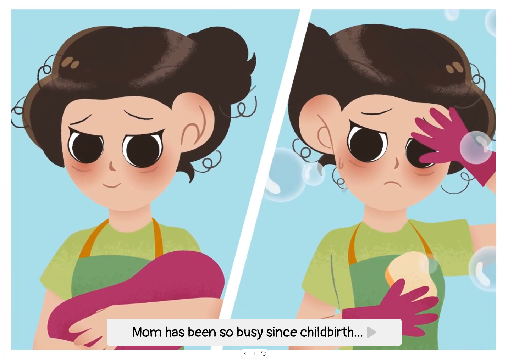
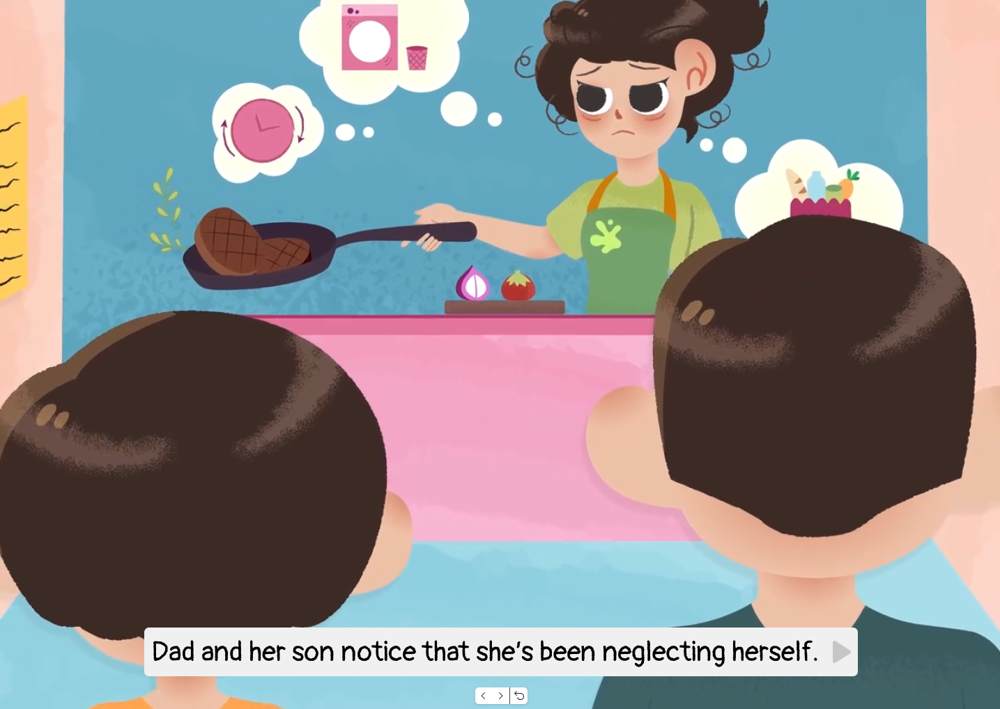
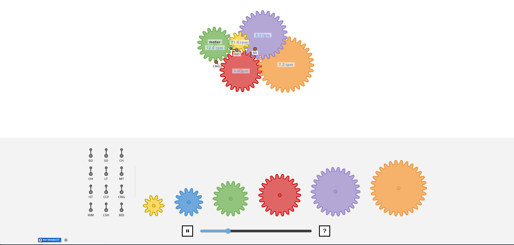
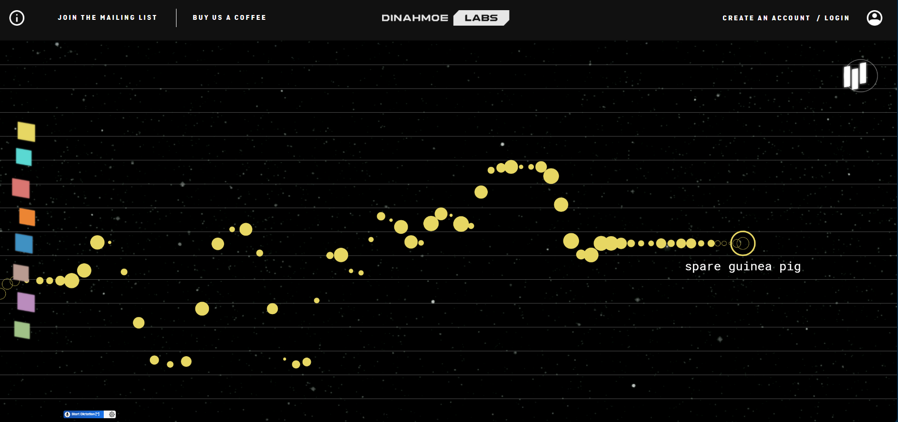
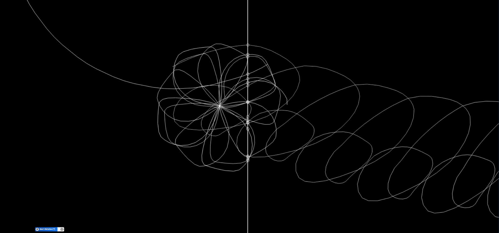

Scenario: Musical Toy for Toddlers
Prompt:
Design a way for young children with minimal language skills to explore music.
Context:
Browser-based musical instruments offer users the ability to dynamically perform music and explore complex audio design. While these interactions allow for a depth of control, they can be intimidating for many adult users, let alone young children whose language skills are still developing.
1. Discussion:
My first impression of the scenario is not to interpret it as designing an instrument for toddlers
in a literal
sense, but as creating an environment where they can explore, try different actions, repeat
interactions and
experiment without having to worry about making mistakes. Rather than teaching children how to play
music
"correctly" or reproduce existing songs, I treat the scenario as a first chance to introduce
toddlers to sound
and musical interaction through open-ended exploration and discovery.
Objectively, a "musical toy" can be approached in several ways: a simplified keyboard, a structured
teaching tool, or a playful sound generation system. I am interested in the latter: treating the
instrument
as a first encounter with musical interaction where the child does not need to understand music
theory or
follow instructions before making sound.
This interpretation is particularly relevant because toddlers have developing language, literacy, and motor skills. This creates a core interaction challenge: How can we design a musical instrument for users with limited motor control and little or no reading ability while still enabling meaningful interaction and creative expression? This challenge becomes a design opportunity. Web interfaces allow us to simplify the relationship between action and sound using large gestures, visual cues, immediate audiovisual feedback, and intuitive mappings.
Building off this interpretation, I identify five main purposes for the project:
- Explore different sounds, musical elements and simple instrument-like interactions through
play.
- Discover cause and effect by learning how different actions produce different sounds and
audiovisual responses.
- Experiment freely with sound by combining, repeating and varying their interactions.
- Create and express themselves through the sounds and musical combinations they produce.
- Develop familiarity and confidence with musical interaction before encountering more structured or
physical instruments.
To fulfill these purposes, the project embodies five core values of worth:
- Playfulness: Encourage curiosity, enjoyment and experimentation rather than structured
learning.
- Accessibility: Simple, intuitive interactions achievable with minimal language and limited
fine
motor skills.
- Self-Expression & Creativity: Multiple ways to combine sounds so user choice shapes the
musical
outcome and experience.
- Confidence: Make experimentation feel safe and rewarding by avoiding punishment, failure
states
and judgement.
- Learning Through Discovery: Musical understanding emerges naturally through interaction and
repetition rather than
explicit instruction.
This interpretation positions the project as an open-ended interactive soundscape where discovery
itself is the primary goal.
2. Synopsis
Project Title: Garden of Sounds
Garden of Sounds is a browser-based interactive soundscape where toddlers build layered music by
placing
gardening tools, animals, and fruits onto customizable storybook scenes. Each item belongs to a
distinct
sound family (percussion, melody, or ambient textures) and plays a synchronized musical loop.
Arranging
and tapping elements on screen allows children to build layered soundscapes through simple
drag-and-drop
play. Each object represents a different sound family, while its position can influence musical
properties
such as pitch or register. Repeated interactions may introduce subtle, controlled variations in
pitch,
rhythm or timbre, while the relationship between an object's identity, position and musical
behaviour remains
consistent. This creates evolving sound without requiring formal musical knowledge.
Response to Purpose and Worth
Garden of Sounds responds to its purpose by establishing an immediate, cause-and-effect feedback
loop. By tapping or placing elements (gardening tools, animals, and fruits) on the storybook canvas,
toddlers receive instant visual animations and synchronized audio loops, allowing toddlers to
understand
how their actions influence sound. The interface is intentionally simplified with large interactive
elements,
minimal text and intuitive controls so children can explore independently.
- To achieve Playfulness and Learning Through Discovery, the instrument incorporates controlled
randomness. Rather than producing a completely fixed output, the instrument allows children to
influence sound through
two predictable relationships: the type of object determines its sound family, while its position on
the canvas can alter
musical properties such as pitch or register. Repeated interaction then introduces small controlled
variations within
these boundaries while keeping the underlying key and rhythm synchronized. This encourages further
experimentation without
making the relationship between action and sound unpredictable, while also helping prevent
repetitive interactions from
becoming monotonous.
- To support Accessibility and Confidence, the interface replaces all text and technical sliders
with
tactile, recognizable objects. Children can pick different background scenes and add as many or as
few elements
as they like. There are no score counters, time limits, or incorrect placements; any interaction
with a musical object
produces a pleasing, harmonized sound. Furthermore, bright visual characterisation, positive
feedback and expressive sounds reinforce a
playful atmosphere, while the absence of failure states or scoring systems ensures children remain
focused on exploration
rather than performance. Together, these design decisions create an experience that encourages
creativity, confidence and
learning through play.
3. Framing
Garden of Sounds is framed as an Interactive Storybook Sound Canvas. A key conceptual and visual influence on the project is the experience of children's picture books, particularly their use of illustrated environments, recognizable characters and objects, simplified visual forms, and visual storytelling. Rather than presenting the child with a conventional music-production interface, the instrument will create a familiar illustrated world that can be explored through interaction.
The garden setting provides the central metaphor for this environment. Gardening tools, animals and fruits become interactive musical objects, while different illustrated scenes provide spaces for children to arrange and combine sounds. This framing allows musical interaction to be presented through objects that children can recognise and manipulate visually, rather than through abstract musical controls such as sliders, knobs, numerical values or technical terminology.
The storybook aesthetic therefore supports the project's broader purpose and worth: it creates an inviting environment where children can explore, repeat and experiment without needing to understand music theory or read instructions. The interface should feel less like a piece of music software and more like an interactive world that happens to make music.


These references inform the visual characterisation of Garden of Sounds, particularly the use of tactile illustration, simplified forms, recognizable objects, environmental storytelling and expressive colour. They are references for the visual language and atmosphere of the interface rather than direct templates for the final artwork.
Interaction
- Large Touch & Click Targets: Interactive elements feature oversized targets suited for toddlers
with developing fine motor skills and imprecise gestures.
- Minimal Interaction Complexity: Primary interactions rely on simple dragging, tapping, and
freeform placement, delivering immediate audiovisual feedback with zero setup.
- Open-Ended Exploration: There are no required sequences or "correct" arrangements. Children
can place as many or as few items on screen as they like to direct their own play.
- Forgiving Gestures: Actions support imprecise movements and continuous repetition,
prioritizing curiosity over mechanical accuracy.
- Immediate Response: Tapping or interacting with an object immediately triggers its associated
sound and visual response, allowing the child to understand that their action has caused the
outcome.
Information Design
- Visual Priority: Relies entirely on graphical communication, eliminating text, numbers, and
word-based labels.
- Intuitive Category Representation: Uses color, shape, and simple visual cues to communicate
interactable elements and object categories.
- Integrated Canvas Layout: Storybook scenes and object selection should remain visually accessible
without requiring complex navigation.
- Legible Action Relationships: Visual motion clearly mirrors user actions, helping toddlers
intuitively connect physical interaction with sound creation.
Mapping
- Object → Sound Family: Each object is associated with a recognisable musical role. For example,
animals may produce melodic sounds, gardening tools may produce percussion, and fruits may produce
ambient textures.
- Position → Musical Variation: The object's position on the canvas can influence musical properties
such as pitch, timbre or panning. These relationships should remain consistent so children can
discover them through repeated interaction.
Audio Design
- Instant Auditory Confirmation: Every meaningful touch or gesture triggers immediate, synchronized
sound playback.
- Warm & Welcoming Sound: Audio assets use gentle organic synths, acoustic tones, and warm
percussion to avoid harsh digital tones or sensory overload.
- Harmonized Multi-Layering: Sound loops remain locked to a shared musical key and tempo, helping
ensure that combinations remain musically compatible.
- Consistent Musical Boundaries: Objects remain within predetermined musical scales, sound families
and volume ranges so that combinations remain musically compatible.
- Controlled Variation: Random variations occur within these boundaries rather than changing the
fundamental identity of an object's sound.
- Layered Interaction: Multiple objects can be combined to create evolving musical layers.
Visual Characterisation
- Storybook Aesthetic: Employs warm, tactile illustrations reminiscent of classic picture books,
featuring soft, approachable forms.
- Balanced Color Palette: Uses bright, engaging colors that are carefully toned to prevent visual
fatigue during extended play.
- Playful Reactive Animation: Elements feature simple, responsive visual feedback (such as gentle
bounces or pulses upon touch) to give the interface a lively, companion-like feel.
- Toy Personality: Presents itself as an inviting, interactive toy rather than a rigid educational
tool or technical application.
Feedback
- Multi-Sensory Response: Interacting with an element yields synchronized visual motion and audio
feedback simultaneously, establishing clear cause-and-effect comprehension.
- Encouraging Tone: All system feedback is purely positive and rewarding; error tones, fail states,
and corrective pop-ups are entirely absent.
- Dynamic Auditory Response: Repeatedly tapping an object may introduce subtle variations in pitch,
timbre or rhythm, while moving an object produces predictable changes according to its spatial
position.
- Forgiving Gestures: Actions support imprecise movements and continuous repetition, prioritizing
curiosity over mechanical accuracy.
Technical Scope
- Included:
+ Browser-based interactive instrument.
+ Touch drag-and-drop and mouse interaction support.
+ Selectable background scenes (e.g., backyard garden, greenhouse, sunny
orchard).
+ Real-time audio loop layering and synchronized tempo management.
+ Large, forgiving collision boundaries for touch input.
+ Controlled randomness for real-time sound variations.
- Excluded:
+ Text-heavy instructions, tutorials, or onboarding pop-ups.
+ Failure states, scoring systems, timers, or competitive
mechanics.
+ Complex music theory controls (BPM inputs, key selectors, envelope
controls).
+ Realistic physics simulations of physical instruments.
+ Multi-level navigation menus or technical setting screens.
Extended Technique: Controlled Randomness
Randomness is used in Garden of Sounds as a bounded form of variation rather than an unpredictable
or chaotic generator. The core relationship between an interaction and its sound remains consistent:
each object belongs to a particular sound family, while its position on the canvas provides
predictable musical variation.
Randomness is introduced primarily through repeated interaction. When tapping repeatedly on one object,
the system may introduce small variations in pitchor timbre within predetermined musical boundaries.
In contrast, changes caused by moving an object across the canvas remain predictable, with position
consistently influencing the associated musical property. This controlled randomness serves three design goals:
- Sustaining Engagement: Prevents repetitive play from becoming monotonous or triggering auditory
fatigue.
- Encouraging Discovery: Rewards continuous experimentation by allowing toddlers to encounter
gentle, delightful surprises through repeated actions.
- Preserving Cause-and-Effect: Keeps variations strictly bounded within recognizable limits,
ensuring children can still clearly connect their physical input to the system's output.
4. Interaction design analysis
The four chosen references were selected because they address complementary interaction challenges in
designing
a musical toy for toddlers: information and mapping, feedback, characterisation, and learnability.
Together, they
inform how Garden of Sounds can communicate musical relationships visually, respond immediately to
interaction,
establish a playful personality, and remain understandable without explicit instruction.
Example 1: Gear Ratio Drum Machine

Primary Key Terms:
- Information Design & Mapping (How complex data is organized visually without
text, and how control layouts naturally correlate with the system being controlled).
Interaction Design Analysis:
- The Gear Ratio Drum Machine translates complex rhythmic relationships, such as polyrhythms and
tempo
subdivisions, into an intuitive visual model of interlocking gears.
- Rather than relying on abstract text labels, numerical input boxes, or step-sequencer menus, the
interface uses gear size, spatial placement, and rotational velocity to make rhythmic relationships
visually perceptible.
Impact on My Project:
- Observation: Complex sonic logic can be communicated through physical and graphical analogies
rather than exposing technical DSP parameters directly.
- Design Decision: For my toddler instrument, I will eliminate numerical sliders and text labels
where
possible. Sound properties will instead be communicated through recognizable objects and spatial
relationships.
Each object will represent a particular sound family, while its position on the canvas can influence
musical
properties such as pitch or register.
- Alignment with Project Framework:
+ Purpose: Supports the purpose of allowing toddlers to develop an intuitive
understanding of cause
and effect and discover sonic relationships through experimentation.
+ Worth: Embodies the values of Accessibility and Learning Through Discovery
by removing the need
for musical or linguistic literacy.
+ Framing: Directly establishes my framing considerations for Information
Design (prioritizing
visual communication over text) and Mapping (correlating visual traits directly to sound
properties).
Example 2: PLINK! by Dinahmoe

Primary Key Term:
- Feedback (The immediate multi-sensory signals returned by the machine to confirm a
user's action).
Interaction Design Analysis:
- PLINK! provides immediate audiovisual feedback: every horizontal drag, touch, or click instantly
generates a glowing spatial node synchronized with an audible pitch.
- The interface decouples sound parameters across participants (one participant adjusts spatial
pitch placement while the system timing triggers activation), demonstrating how separating
parameters
can create expressive results without requiring a visually complex interface.
- The visual timeline retains a temporary trail of glowing nodes, providing persistent feedback that
lets users visually trace their recent interactions across space and time.
Impact on My Project:
- Observation: Immediate visual and auditory feedback makes the relationship between the toddler's
action and the resulting sound understandable.
- Design Decision: Every toddler gesture (tap, drag, or swipe) will produce an instantaneous,
high-contrast visual response (e.g., expanding rings, bouncing characters) locked to audio output.
Furthermore, the emphasis on immediate feedback also informs how I will use Controlled Randomness.
Rather than making the outcome completely unpredictable, variation will occur within a recognisable
interaction. Repeated interactions with the same element will produce the same general sound
family, while small variations in pitch, timbre or rhythm may occur within predetermined boundaries.
This preserves cause-and-effect legibility while preventing repetitive interactions from becoming
monotonous.
- Alignment with Project Framework:
+ Purpose: Supports the purpose of allowing toddlers to explore different
sounds through playful
interaction and build confidence through instant response.
+ Worth: Embodies the values of Playfulness and Self-Expression by making
every physical interaction
immediately responsive.
+ Framing: Informs my framing for Audio Design (immediate,
non-overstimulating response) and
Extended Technique (controlled randomness within bounded interactions to sustain
curiosity).
Example 3: Chimes by Marina Budarina
Primary Key Term:
- Characterisation (The aesthetic appearance, visual narrative, personality, and
dynamic behavior of the UI).
Interaction Design Analysis:
- Chimes utilizes a dynamic physical metaphor—an interactive curtain composed of vertical typography
and cultural graphics representing regions such as Vietnam, Japan, and France.
- Instead of standard digital buttons or rigid rectangular triggers, hovering or sweeping the cursor
across the visual text "strings" generates fluid, acoustic responses tailored to regional
scales.
- The characterization is tactile, organic, and curious, transforming what could have been a static
database of audio samples into an inviting, living environment.
Impact on My Project:
- Observation: An interface’s visual appearance combined with its behavioral response defines its
personality, turning a utility into an inviting world.
- Design Decision: My project has a framing boundary: it will not adopt the visual language of
professional music-production software, such as dense controls, numerical parameters or technical
terminology. The UI will adopt an organic, character-driven personality featuring friendly
illustrated
objects and characters, soft shapes, and expressive animations.
- Alignment with Project Framework:
+ Purpose: Supports the purpose of allowing toddlers to enjoy music through
creative exploration
rather than structured learning.
+ Worth: Embodies the values of Playfulness and Creativity by substituting
rigid controls with an
inviting, storybook-like aesthetic.
+ Framing: Directly dictates my framing considerations for Visual
Characterisation (friendly
characters, soft shapes, warm color palette) and Interaction (forgiving hover/touch
targets).
Example 4: UN / CYCLE by Aurensnyder

Primary Key Term:
- Learnability (How intuitively a system can be understood and operated through
immediate interaction, supported secondarily by Accessibility).
Interaction Design Analysis:
- UN / CYCLE presents a minimalist, instruction-free canvas where continuous drawing gestures create
looping visual trajectories.
- As these user-drawn lines intersect a central vertical axis, harmonized piano notes are generated
relative to the vertical position of the intersection.
- The system offers complete freedom from failure: there are no wrong steps, score counters, time
limits, or corrective error messages.
- The basic interaction can be understood through direct experimentation: a single continuous stroke
allows the user to discover the underlying rule that drawing across the axis creates sound.
Impact on My Project:
- Observation: High learnability can be achieved when an interface allows its rules to be discovered
through direct interaction rather than requiring users to understand instructions first.
- Design Decision: The toddler toy will feature zero text-heavy instructions, failure states, or
explicit success criteria. Interactions will be designed to remain forgiving: imprecise gestures
should
still produce an audible and visually understandable response rather than an error state. The system
will
constrain sounds within compatible musical boundaries so that experimentation does not require
precision
to produce a satisfying result.
- Alignment with Project Framework:
+ Purpose: Supports the purpose of allowing toddlers to express themselves
freely without fear of
mistakes and learn through trial and error.
+ Worth: Embodies the core values of Accessibility and Confidence by
accommodating limited fine
motor control and creating an environment where interactions do not result in punishment or
failure.
+ Framing: Shapes my framing considerations for Technical Scope & Limits
(exclusion of failure
states, time pressure, or scoring systems) and Feedback (purely positive, non-evaluative
responses).